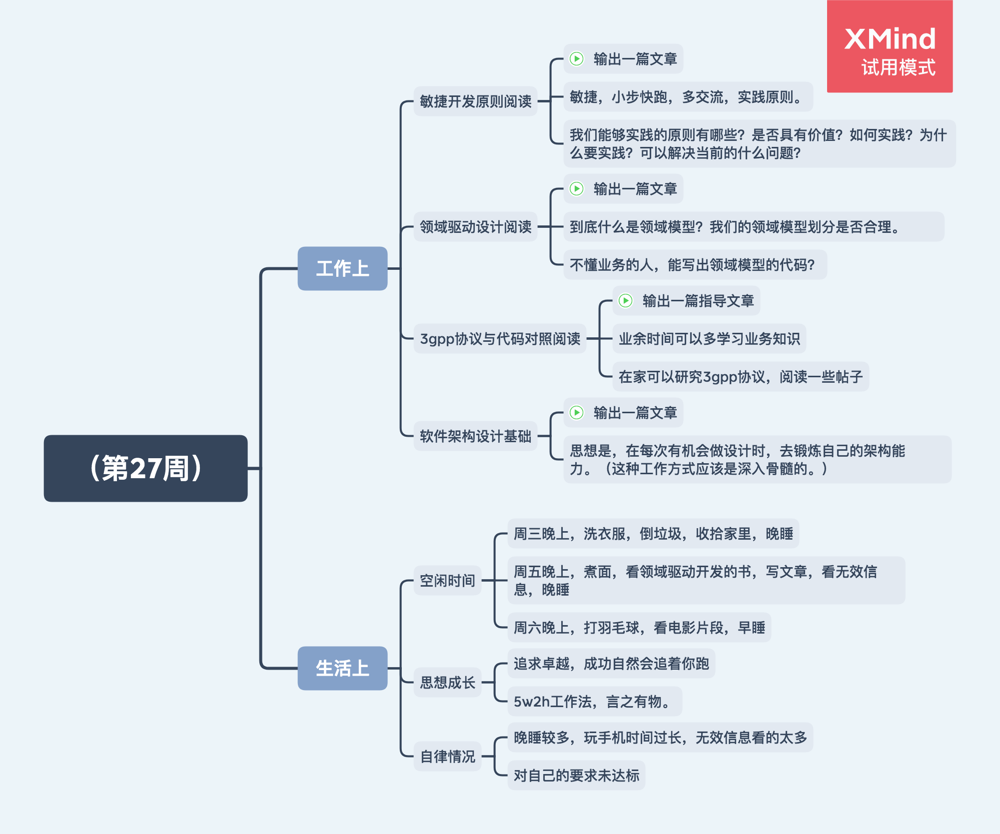

简介
Part I
读书书单
1. 2014-2016书单分类
2. 2014-2016书单总体
3. 2017书单总体
4. 2018书单总体
5. 2019书单总体
读书感悟
1. 智能主义
2. 选择的理论
3. 三个火枪手
4. 我的2016
5. 解忧杂货铺后感
6. 常识后感
感想
1. 西方的无耻
2. 自律养成
3. 杂谈
4. 忆大伯
5. 思考问题的方式决定了你的成长极限
6. 如何专注
Part II
家人传记
1. 我的祖父母
Part III
2020周记
1. 第27周
2. 第28周
3. 第29周
4. 第30周
README.md
Part IV
LW贡献
1. 二十四小时
2. 回顾
Published with GitBook
1. 第27周
（第27周）
日期：2020/7/5

本周总结
本周的主要工作是优化代码，主要兴趣是软件设计和开发的理论知识。在人际交流中存在不足，不能找话题，不够幽默和灵活。在自我控制方面严重不足，精力管控、专注力提升都亟待提高。
下周展望
至少完成一篇上述要求的文章输出
自律提升，做到对自己的要求。
results matching "
"
No results matching "
"